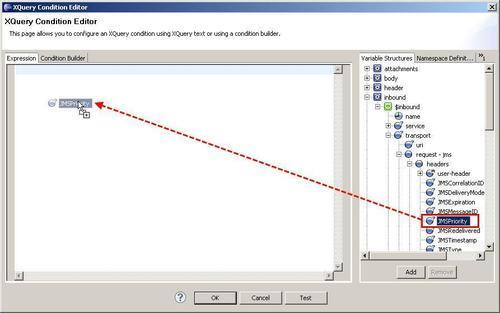
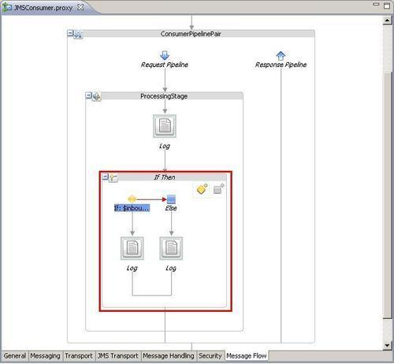
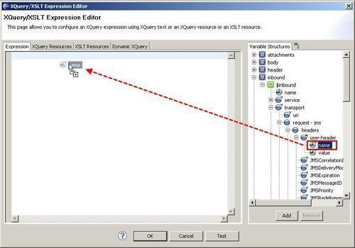

In this recipe, we will show how to access the JMS Transport headers and properties in the message flow. This can be useful, for example, to decide for which different business services the message should be routed to.
We will implement a decision based on the JMS header JMSPriority and another decision based on the user-defined property myProperty.
For this recipe, we will use the queue SourceQueue from the OSB Cookbook standard environment.
Import the base OSB project containing the solution from the previous recipe into Eclipse from \chapter-3\getting-ready\accessing-jms-transport-headers-in-message-flow.
In Eclipse OEPE, perform the following steps to add the two decisions to the message flow of the proxy service:
> 5 to the right of the generated expression so that it reads: $inbound/ctx:transport/ctx:request/tp:headers/jms:JMSPriority > 5.

Now it's time to test the changes to the proxy service.
In the incoming message in the proxy service, the transport-specific header and property values are available through the inbound context variable. Depending on the transport configured on the proxy service, the inbound variable holds different values in the request and response inside the transport node. In the case of JMS, we can find the different JMS headers, such as JMSPriority in the request node under the transport node (in the inbound variable).
By using XPath, these values can be accessed and used for the expressions of the OSB actions, such as If Then or Routing Table, for example, to implement a routing based on JMS header values.
Here, we will learn how we can access user-defined JMS properties:
The user-defined JMS properties are only available if the headers are passed into the proxy service. This feature is disabled by default on a proxy service. To enable it, perform the following steps in OEPE:
Now the user-defined JMS properties are passed into the proxy service and can be accessed through the inbound context variable. Let's add a Log action to print out the value of the myProperty JMS property:

$inbound/ctx:transport/ctx:request/tp:headers/tp:user-header[@name = 'myProperty']/@value.Now, retest the project by sending a message to the SourceQueue with a user-defined property myProperty. The value passed should be shown on the console window.